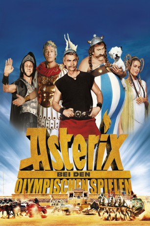
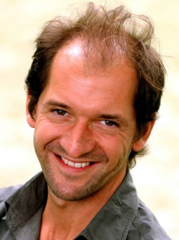

#2126 Asterix bei den Olympischen Spielen
 
 IMDB-Wertung: 5.1 / 10
IMDB-Wertung: 5.1 / 10  Metascore: 0
Metascore: 0 
Die Abenteuer des blitzschnellen Asterix und seines zaubertrankgestärkten Gefährten Obelix führen diesmal ins ferne Griechenland. Dort wollen sie dem jungen und wagemutigen Gallier Alafolix helfen, die Olympischen Spiele und gleichzeitig das Herz der wunderschönen griechischen Prinzessin Irina zu gewinnen. Wäre da nur nicht der tückische Brutus, der alles daran setzt, die Olympiade zu beherrschen und außerdem seinen Vater Julius Caesar aus dem Weg zu räumen...
Jahr: 2008
Dauer: 116 Minuten
FSK: 6
Land: Frankreich Studio: Constantin FilmTonspuren:
Untertitel:
Auflösung: 1080p (1920x816) Größe: 10199 MB
Genre: Komödie, Abenteuer, Fantasy, Familie
Regisseur: Frédéric Forestier, Thomas Langmann
Drehbuch: René Goscinny, Albert Uderzo, Thomas Langmann, Olivier Dazat, Alexandre Charlot
Soundtrack: Frédéric Talgorn
Darsteller:
 Gérard Depardieu als Obélix
Gérard Depardieu als Obélix Clovis Cornillac als Astérix
Clovis Cornillac als Astérix Benoît Poelvoorde als Brutus
Benoît Poelvoorde als Brutus Alain Delon als Jules Cesar
Alain Delon als Jules Cesar- Vanessa Hessler als Princesse Irina
 Franck Dubosc als Assurancetourix
Franck Dubosc als Assurancetourix José Garcia als Couverdepus
José Garcia als Couverdepus- Stéphane Rousseau als Alafolix
 Jean-Pierre Cassel als Panoramix
Jean-Pierre Cassel als Panoramix Elie Semoun als Omega
Elie Semoun als Omega Santiago Segura als Docteurmabus
Santiago Segura als Docteurmabus Michael Herbig als Pasunmotdeplus
Michael Herbig als Pasunmotdeplus Bouli Lanners als Samagas
Bouli Lanners als Samagas Jamel Debbouze als Numérobis
Jamel Debbouze als Numérobis- Adriana Karembeu als Mme Agecanonix
 Nathan Jones als Humungus
Nathan Jones als Humungus- Mónica Cruz als Esmeralda
 Michael Schumacher als Schumix
Michael Schumacher als Schumix-  Stéphane De Groodt als Numéric
- Dany Brillant als Gouteur miroir
- Mouloud Achour als Mouloudus
- Rachid Bouchareb als Athlète Égyptien
- Christophe de Choisy als Athlète Flamme
- Frédéric Forestier als Légionnaire Romain 1 Site
 Vernon Dobtcheff als Un druide , uncredited
Vernon Dobtcheff als Un druide , uncredited Alexandre Astier als Mordicus
Alexandre Astier als Mordicus- Jérôme Le Banner als Claudius Cornedurus
- Luca Bizzarri als Alpha
- Paolo Kessisoglu als Beta
- Sim als Agecanonix
- Jean Todt als Le patron de Shumix
- Zinédine Zidane als Numérodis
- Tony Parker als Tonus Parker
- Amélie Mauresmo als Amélix
- Patrice Thibaud als L'Entraineur
- Farid Khider als Lanceur Javelot Grec
- Vincent Moscato als Le lutteur Goth
- Elric Thomas als Abraracourcix
- Francis Lalanne als Lalanix
- Jean-Pierre Castaldi als Castaldus
- Enrico Brignano als Commentateur Sportif
- Eduardo Gomez als Cétautomatix
- Eduardo MacGregor als Un Druide
- Arsène Mosca als Secrétaire du Roi
- Delphine Depardieu als Servante Irina
- Dorothée Jemma als Bonemine
- Mustapha El Atrassi als Soldat Romain 1
- Jean-Christophe Barc als Civil Grec 1
- Chouki Gtari als Escorte Numerobis
- P. Ardura als Commissaire de Course
Datei: X:\Kinder Collections\Asterix Realfilme\Asterix bei den Olympischen Spielen (2008, FSK6, 1920x816).mkv seit 06.10.2015
Festplatte: Kinder-Filme+Trick
 Es gibt insgesamt 7 Filme in der Gruppe 'Kinder Collections\Asterix Realfilme'
Es gibt insgesamt 7 Filme in der Gruppe 'Kinder Collections\Asterix Realfilme'